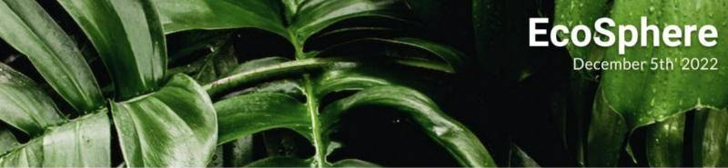
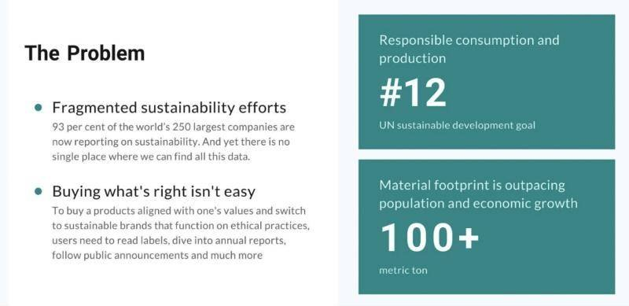
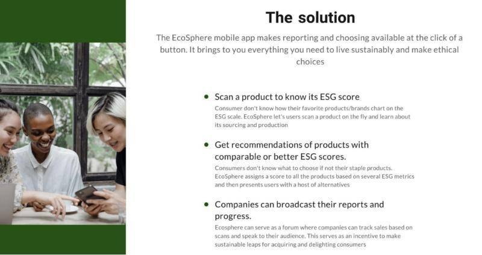
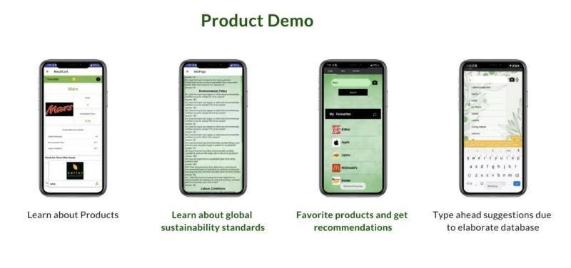
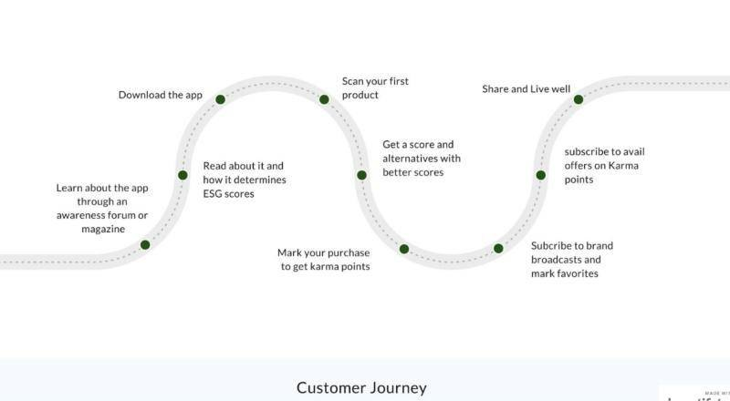
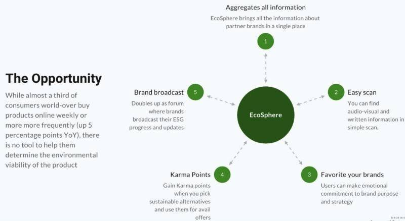
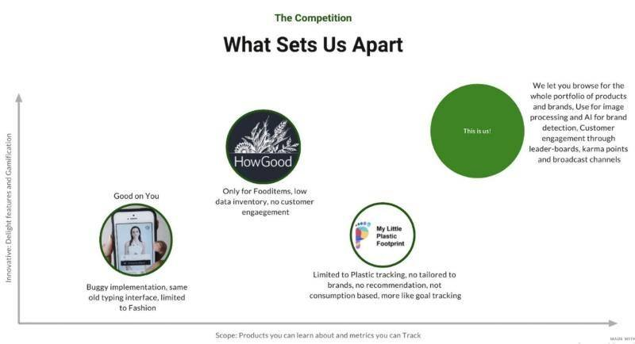
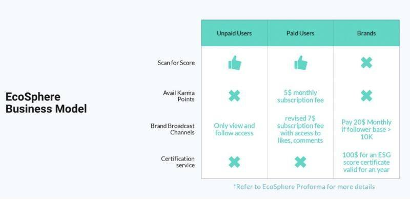

Entrepreneurship, 0-to-1 product
EcoSphere: new venture

Situation
I took a New Venture class taught by Professor Zachary Ciccone at Carnegie Mellon University, where I developed an ESG consumer product from scratch. I did the business landscaping, conducted customer interviews, built a revenue model, and forecasted demand.
Research: pain points


Final design (minimum viable product)


EcoSphere features

Competitor analysis

